-
1935
Inicio de la Escuela de Preaprendizaje No. 3
Se nombro primer Director al Ing. Francisco J. del Collado e Illanes, designado por el Ing. Juan de Dios Bátiz Paredes. En su primer semestre 114 aspirantes fueron inscritos para la segunda mitad de 1935 formando 4 grupos de primer año. Esta escuela se inició con el horario de 8 a 14 horas donde se instruían las materias de Aritmética y Geometría, Dibujo, Legislación del Trabajo, Higiene, Historia, Castellano y Geografía; y por la tarde en el horario de 16 a 20 horas se impartían los talleres de Carpintería, Hojalatería, Electricidad y Herrería.
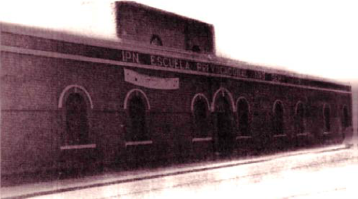 -
1 de Enero de 1936
Fundación del Instituto Politécnico Nacional
El General Lázaro Cárdenas del Rio con la finalidad de atender en forma más específica las necesidades técnico-industriales que el país requería, su tarea primordial sería la de generar ingenieros y técnicos en áreas especializadas que fortalecieran el desarrollo de la nación. Por ello el Instituto toma un gran impulso y la demanda de la juventud por ingresar a sus espacios crece de manera exponencial. Estando al frente del Departamento de Enseñanza Técnica, el ingeniero Juan de Dios Bátiz, con el apoyo del presidente Lázaro Cárdenas, trabajó en una institución que se encargara de la educacion técnica en México, dando origen al Instituto Politécnico Nacional.
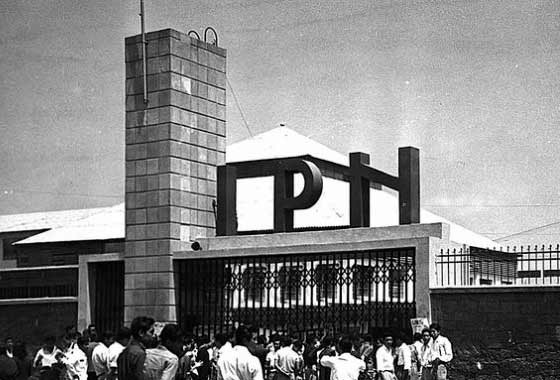 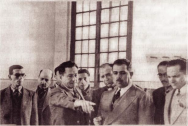 -
1938
Surgen los Fogoneros Infernales
Lo que en ese entonces era la Prevocacional 3 se convirtio en la casa de un equipo de Futbol Americano: Los Fogoneros Infernales, que hasta en su nombre deportivo reflejan algo de su particular idiosincrasia: Fogoneros, por la cercanía de los edificios al paso del Ferrocarril de Cuernavaca, cuyo silbato madrugador, servia de despertador a los habitantes de los sótanos; e Infernales, tal vez porque, para mucha gente, la forma de ser y el comportamiento de los jugadores del Equipo era verdaderamente infernal. Su primer entrenador, José Alvarado de la Tejera
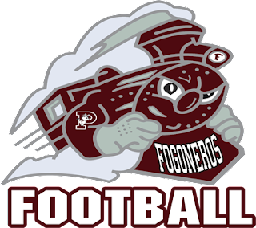 -
1944
De la SEP al IPN
La SEP pasa el control técnico-administrativo de las prevocacionales 1, 2, 3, 4 y 5 del DF al IPN. En el año de 1944 las escuelas prevocacionales pasaron a ser escuelas tecnológicas. Fue así como la Prevocacional núm. 3 se convirtió en Escuela Tecnológica núm. 3, sin perder por ello su vinculación con el IPN. Sus nuevos planes de estudio de tres años eran equivalentes a los de segunda enseñanza con los enfoques formativos que se requerían para el desarrollo industrial del país en ese momento. Al darse los cambios necesarios para la evolución de la educación vinculada orgánicamente al IPN.
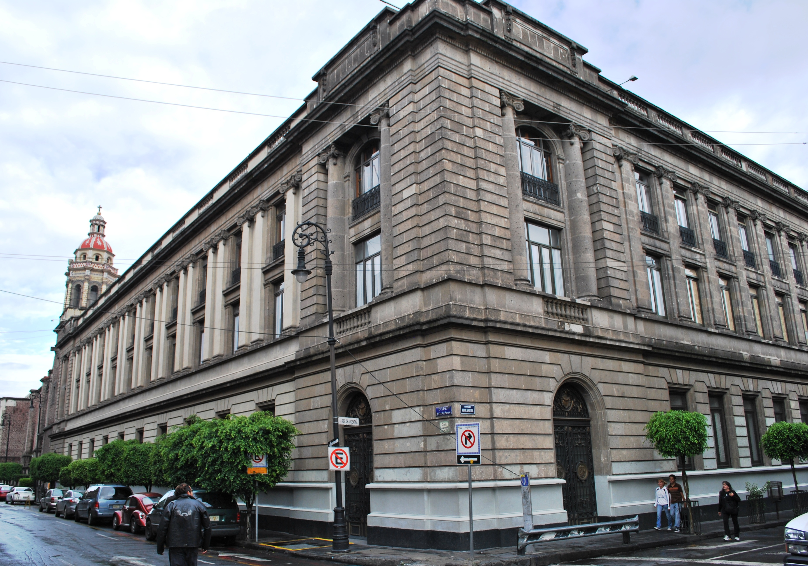 -
1948
Escuela Tecnologica 3
Escuelas prevocacionales pasaron a ser escuelas tecnológicas. Fue así como la Prevocacional núm. 3 se convirtió en Escuela Tecnológica núm. 3, sin perder por ello su vinculación con el IPN. Sus nuevos planes de estudio de tres años eran equivalentes a los de segunda enseñanza con los enfoques formativos que se requerían para el desarrollo industrial del país en ese momento.
-
1952
Mantenimiento de las instalaciones
Sus nuevos planes de estudio de tres años eran equivalentes a los de segunda enseñanza con los enfoques formativos que se requerían para el desarrollo industrial del país en ese momento.
-
1964
Especialidades cortas
Se proyectaron dos nuevas especialidades cortas, Computación Electrónica y Mantenimiento de Sistemas de Computación, mismas que cubrirían un nivel sub profesional de tipo terminal.
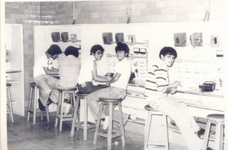 -
1967
Vocacional 9
En 1967 como resultado de una reestructuración académica administrativa el plantel pasó a ser la Vocacional núm. 9 de Ciencias Físico Matemáticas.
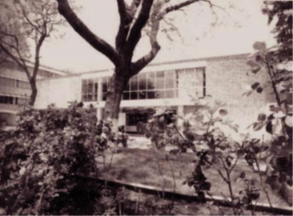 -
1969
Vocacional 9 “Juan de Dios Bátiz
En el año de 1969, a la entonces Escuela Vocacional núm. 9 se le asignó de manera oficial el nombre de “Juan de Dios Bátiz”, en honor a su ilustre fundador. Aunque en realidad desde hacía tiempo ya se referían a ella con este nombre sin estar todavía oficializado.
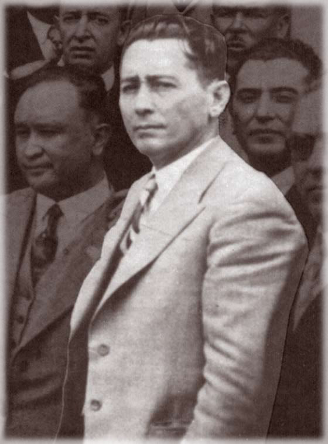
En esa nueva etapa evolutiva como Escuela Vocacional, fue ganando gran prestigio entre las demás escuelas de nivel medio superior, por su orden, disciplina y su reconocida calidad académica y humana. -
1972
Vocacional a CECyT
Las vocacionales tecnológicas se transformaron en centros de estudios científicos y tecnológicos, por eso a partir de esa fecha, se le conoce a este plantel como CECyT núm. 9 “Juan de Dios Bátiz.” Desde entonces cuenta con un plan de estudios de seis semestres, con una función bivalente que permite a los alumnos elegir entre dos opciones, por una parte, la elección terminal como técnico de nivel medio superior, o bien la función propedéutica para el nivel superior. En aquel momento se impartían las carreras de Máquinas-Herramienta, Programación y Electricidad.
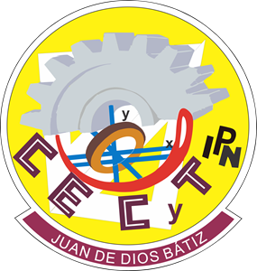 -
1972
Instauración de la carrera Técnica de Programacion
Con el cambio de Vocacionales a Centros de Estudios Cientificos y Tecnológicos, una de las carreras que se instauró en esos momentos fue la carrera de técnico en programación que, hasta la fecha, continua únicamente con cambios en los planes de estudio.
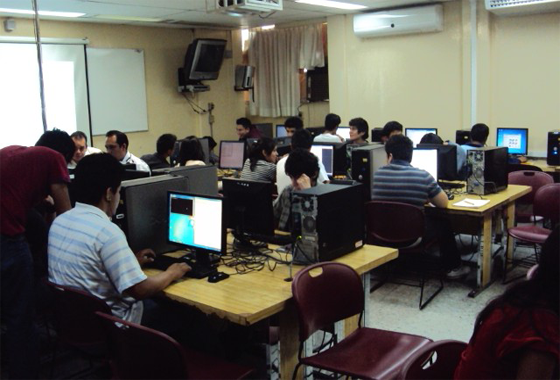 -
1977
Nace Expo-Bátiz
Se crea Expo-Bátiz en Física y en las especialidades de ese entonces, después se integraron todas las áreas, lo que inicio la exposición académico-tecnológica que ahora se realiza año con año.
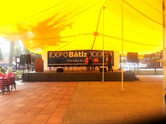 -
1980
Modernizacion de los laboratorios y talleres
Se modernizaron las instalaciones y el equipo de talleres y laboratorios, se estableció el laboratorio de Idiomas y se acondicionó el laboratorio de Biología.
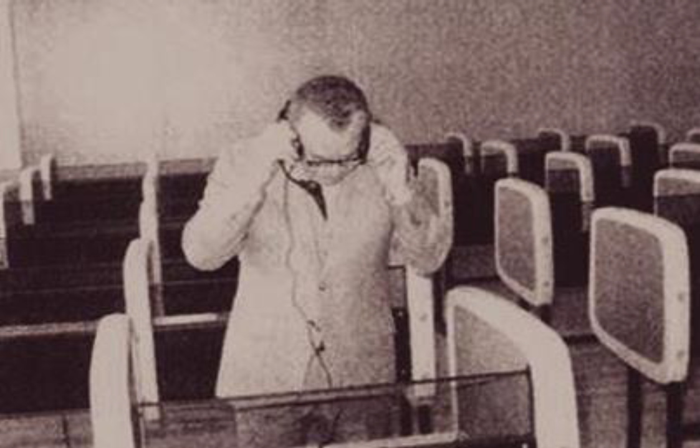 -
1987
Instauración de la carrera Técnica de Sistemas Digitales
Esta carrera se implementa en 1987 para sustituir a la carrera de Electricidad, y así se logró la instauración de un cambio curricular en la ubicación y secuencia programática existente.
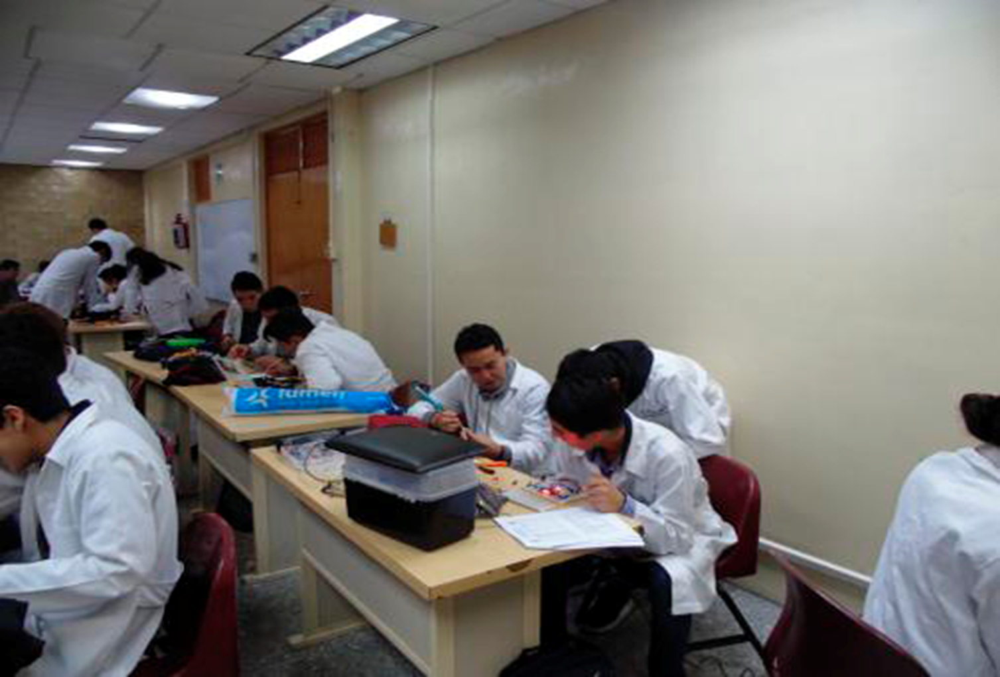 -
1990
Instauración de la carrera Técnica de Máquinas con Sistemas Automatizados
Esta carrera se implementa en 1990, sustituyendo a la carrera de Maquina Herramientas

-
1997
Inauguración del Aula Siglo XXI
Se inagura el aula Siglo XXI (Ahora Aula 4.0). El aula Siglo XXI se adecuó, así como el taller de la Unidad de Informática UDI, para que se trabajara con mayor eficiencia en estas áreas, optimizándose los espacios y los recursos que éstas ofrecían.
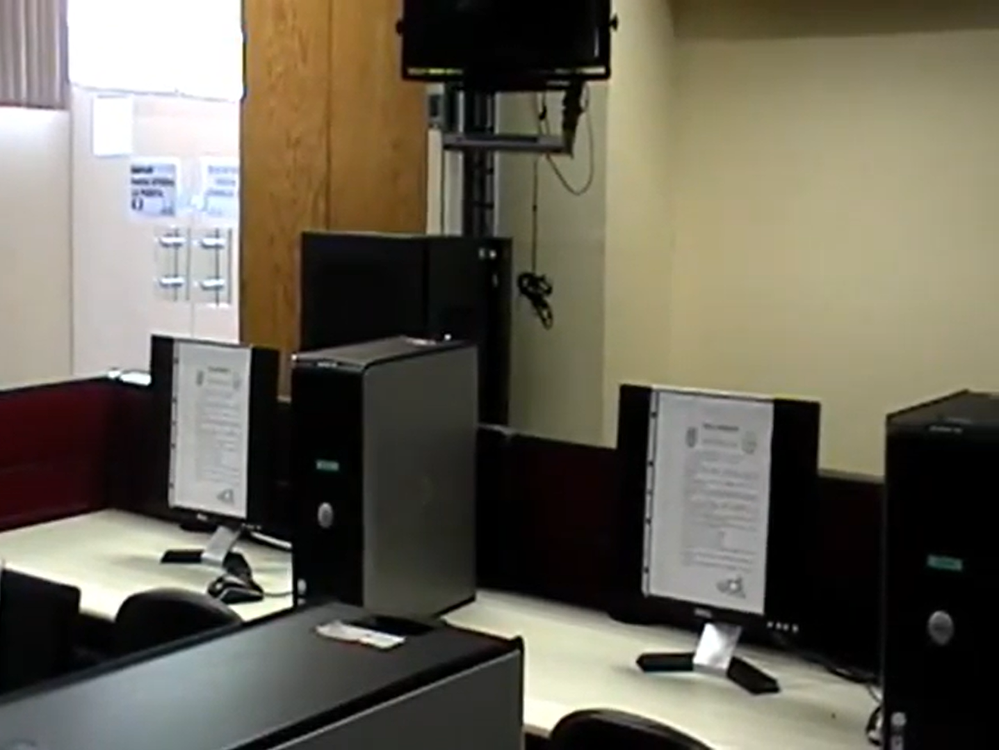 -
2003
Titulación como Técnico
Se apoyo la titulación, estando en condiciones de titularse 26 alumnos en Máquinas con Sistemas Automatizados, 89 en Sistemas Digitales y 140 en Programación.
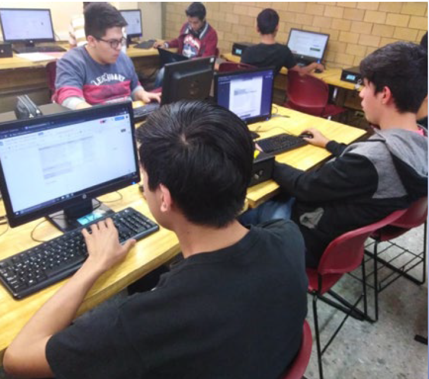 -
2016
Aula Samsung
La empresa Samsung puso en operación su aula digital "Samsung Smart School Solution", con el propósito de innovar en el desarrollo y aprendizaje de los alumnos a través de la tecnología.
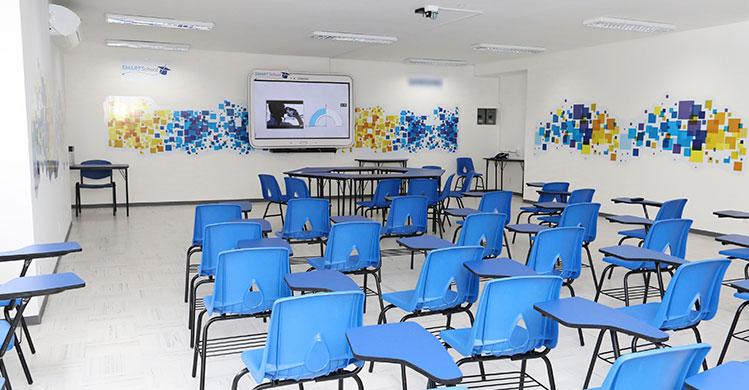 -
2017
Bachillerato General Polivirtual
Se inicia el primersemestre del Polivirtual, para apoyar a los estudiantes que no cuentan con el tiempo o no se les es posible la educación presencial.
-
2021
Instauración de la carrera Técnica en Mecatrónica
Se implementa la carrera de Técnico en Mecatrónica, con el objetivo de formar técnicos que desarrollen las competencias necesarias para la integración de tecnologías de las áreas mecánica, eléctrica, electrónica, computacional y automatización en el diseño de modelos y prototipos mecatrónicos.
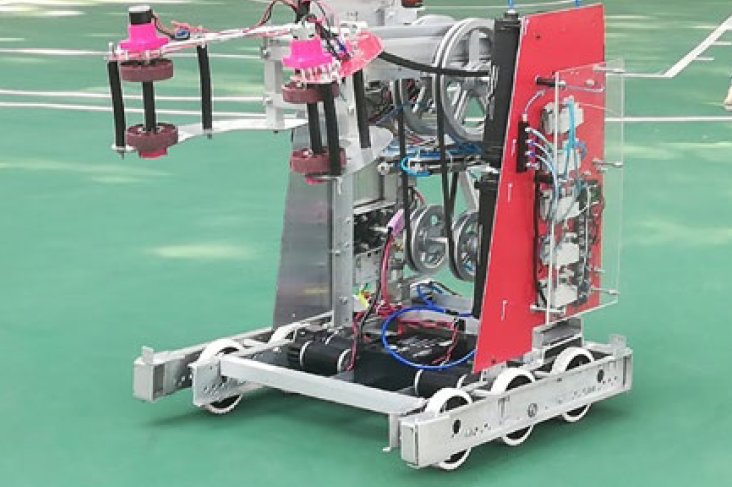